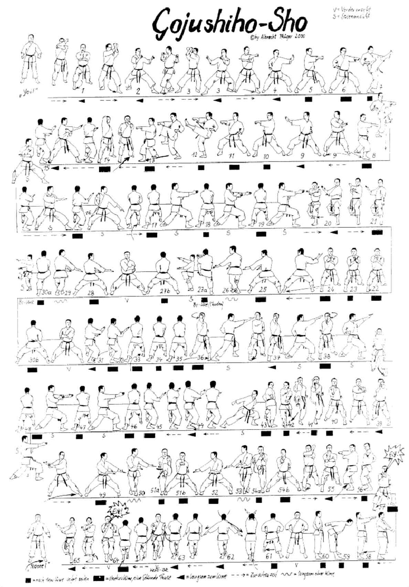

Gojushiho Sho

- Saluto, Yoi Hachiji Dachi
- Avanzare con Zenkutsu Dachi destro Uraken Uchi Chudan destro, il pugno sinistro sotto il braccio destro.
- Avanzare di 45° verso sinistra in posizione Kokutsu Dachi eseguire Morote Kakiwake Chudan.
- Avvicinando il piede sinistro guardo a destra e avanzo a 45° in Kokutsu Dachi eseguendo Morote Kakiwake Chudan.
- Spostando il piede sinistro a 45° verso sinistra in posizione Fudo Dachi eseguire tate Shuto Uke chudan sinistro.
- Passando in posizione Zenkutsu Dachi eseguo Ren Tzuki chudan destro poi sinistro.
- Avanzare calciando mae geri destro.
- Scendere in posizione Zenkutsu Dachi Tzuki chudan destro.
- Spostando gamba destra a 45° verso destra in posizione Fudo Dachi eseguire tate Shuto Uke chudan.
- Passando in posizione Zenkutsu Dachi eseguo Ren Tzuki sinistro poi destro.
- Avanzare calciando mae geri sinistro.
- Scendere in posizione Zenkutsu Dachi Tzuki chudan sinistro.
- Indietreggiando con la gamba sinistra in posizione Zenkutsu Dachi destro eseguire Empi Uchi Jodan (KIAI!)
- Cambio direzione spostando il piede destro indietro Yoriashi in Kokutsu Dachi sinistro Shuto Nagashi Uke chudan destro.
- Sul posto Tekubi Kaeashi destro tate Shuto Uke sinistro gedan.
- Avanzare in posizione Zenkutsu Dachi destro eseguire Sanbon Nukite chudan destro, sinistro, destro.
- Cambio direzione spostando il piede destro indietro Yoriashi in Kokutsu Dachi sinistro Shuto Nagashi Uke chudan destro.
- Sul posto Tekubi Kaeashi destro tate Shuto Uke sinistro gedan.
- Avanzare in posizione Zenkutsu Dachi destro eseguire Sanbon Nukite chudan destro, sinistro, destro.
- Ruotando sul piede destro spostare la gamba sinistra di 270° a sinistra in Kiba Dachi eseguire Haito Uke gedan sinistro.
- Sopravanzare con la gamba destra verso sinistra in Kosa Dachi.
- Eseguire Awase Tsukamite in Fumikomi sinistro e scendere in Kiba Dachi portando le braccia al fianco sinistro.
- Sul posto Kiba Dachi Haito Uke gedan destro.
- Sopravanzare con la gamba sinistra verso destra in Kosa Dachi.
- Eseguire Awase Tsukamite in Fumikomi destro e scendere ancora in Kiba Dachi portando le braccia al fianco destro.
- Indietreggiare di 90° a destra con la gamba destra Yoriashi in Kokutsu Dachi destro Shuto Nagashi Uke chudan destro.
- Sul posto Tekubi Kaeashi destro tate Shuto Uke sinistro gedan.
- Avanzare in posizione Zenkutsu Dachi destro eseguire Sanbon Nukite chudan destro, sinistro, destro.
- Spostando la gamba sinistra di 180° sulla sinistra in posizione Zenkutsu Dachi eseguire Gyaku Shuto Uchi Jodan destro.
- Avanzare Zenkutsu Dachi destro Shuto Uke jodan destro.
- Sul posto Gyaku Shuto Uchi Jodan sinistro.
- Avanzare Zenkutsu Dachi Shuto Uke Jodan sinistro.
- Sul posto in posizione Zenkutsu Dachi sinistro eseguire Gyaku Uchi Uke Chudan destro.
- Avanzando calciare Mae Geri chudan destro.
- Scendendo Soe Ashi Fumikomi Soto Uke jodan destro Tzuki gedan sinistro.
- Allungando la gamba sinistra spingere in Zenkutsu Dachi sinistro, gedan barai destro dietro, sguardo dietro.
- Spostando il piede destro Yoriashi in posizione Kokutsu Dachi destro Shuto Nagashi Uke chudan destro.
- Sul posto Tekubi Kaeashi destro tate Shuto Uke sinistro gedan.
- Avanzare in posizione Zenkutsu Dachi destro eseguire Sanbon Nukite chudan destro, sinistro, destro.
- Ruotando di schiena spostare la gamba sinistra di 270° a sinistra in Kiba Dachi ed eseguo Haito Uke chudan sinistro.
- Sopravanzare con la gamba destra verso sinistra in Kosa Dachi.
- Eseguire Tate Shuto Uke chudan sinistro ed eseguendo Fumikomi sinistro vado in Kiba Dachi, Tzuki chudan destro.
- Sul posto Kiba Dachi Haito Uke gedan destro guardando a destra.
- Sopravanzare con la gamba sinistra verso destra in Kosa Dachi.
- Eseguire tate Shuto Uke chudan sinistro ed eseguendo Fumikomi vado in Kiba Dachi, Tzuki chudan destro.
- Avanzare con la gamba destra in posizione Zenkutsu Dachi eseguendo Uraken Uchi chudan destro il braccio sinistro viene a trovarsi sotto il gomito destro.
- Portando la gamba destra indietro verso destra di 135° in posizione Kiba Dachi Yoko Tzuki chudan sinistro.
- Avanzare Zenkutsu Dachi Oitsuki chudan destro.
- Ruotando sul piede destro Hachiji Dachi le braccia sono stese in posizione frontale i pugni fermi.
- Sul posto Morote Uchi gedan inclinandosi in avanti.
- Spostando la gamba sinistra di 90° verso sinistra in posizione Zenkutsu Dachi eseguire Morote Empi Uke Chudan.
- Avanzando Neko Ashi Dachi gamba destra avanti Morote Shuto gedan Kakiwake.
- Sul posto Morote Keito Uke chudan.
- Avanzare Neko Ashi Dachi Morote Seiryuto chudan (KIAI!)
- Indietreggiando con la gamba destra con Yoriashi in Kokutsu Dachi eseguire Shuto Nagashi Uke chudan destro.
- Ritornare con il piede sinistro.
- Yame.